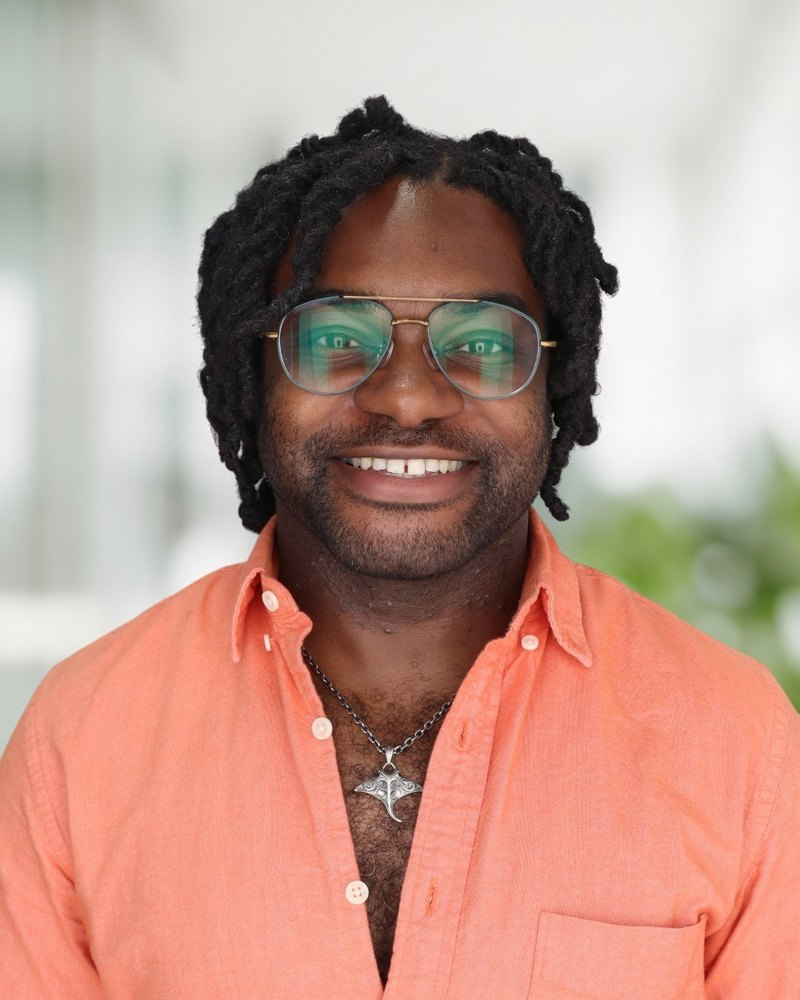

About
Keith James II
Keith James II is the pen name of James K. Martin II, a 2026 Individual Artist Fellow in Prose of the New Jersey State Council on the Arts. He trained as a molecular biologist and spent years on how cells survive stress. Then he wrote a novel about people who haul cargo with their bodies, because nothing else in their world is left to do it.
Kinesthoria: The Weight of Wheels is his first novel of the One Land. He is adapting it into an illustrated edition now.
His writing draws on the overlap between scientific inquiry and lived experience, exploring how close observation of the natural world, whether at the molecular level or in the backyard apiary, reshapes our understanding of ourselves. Artist Fellowship Catalog 2026
The science underneath
He earned his PhD in molecular biology at Princeton, where his first-author paper in Cell described a dual-mechanism antibiotic that kills gram-negative bacteria without breeding resistance. At the University of Chicago he moved into cancer biology, running genome-wide screens of what a tumor needs when nutrients run short. At a drug-discovery startup he built a working microbiology lab out of an empty room.
The One Land runs on physiology. Lung capacity, load, and the cost of hauling eight times your own weight across open ground drive what happens. The gene-readers measure a person the way a screen measures a cell line, accurately and for exactly one thing. The novel follows what that measurement misses.
Teaching
He is Educational Developer for STEM at the Center for Teaching Excellence at The George Washington University. He works with faculty in the sciences, engineering, computing, and the health professions on course design and assessment. Before GW he taught pre-clerkship medical students at Rowan-Virtua School of Osteopathic Medicine. He directed a cardiovascular and renal physiology block there, and co-directed a program on AI in medicine that reached more than 900 learners a year.
AI, and the reasoning it offers to replace
His current work asks how instructors can use AI without hollowing out the reasoning it is meant to support. He leads his center's work on ethical AI integration in STEM instruction, and he co-built Professor Dobbi, a domain-constrained Socratic tutor that asks rather than answers. In a pilot evaluation it cut D and F rates by 67 percent.
He has written on information literacy as a shared cognitive architecture, and on what medical students lose when a model does the appraisal for them.
Kinesthoria asks a version of the same question. What does a people keep after the thing that made them powerful burns, or gets handed to a machine? In the One Land the engines are gone and the reasoning still has to happen.
He reads and writes the science fiction that keeps its own rules. If a world runs on muscle, its characters get tired, and the story has to account for that.
Selected recognition
-
Individual Artist Fellowship in Prose, 2026
New Jersey State Council on the Arts, selected from 870 applicants.
-
President’s Award for Excellence in Innovative Instructional Delivery, 2026
Rowan University, with Jeffrey Powers, for Professor Dobbi.
-
Innovation in Medical Education Award, 2026
AACOM and the Society of Osteopathic Medical Educators, with Jeffrey Powers.
-
Selected publications
First author, Cell (2020), on a dual-mechanism antibiotic. Medical education work in Medical Science Educator and the Journal of the Medical Library Association.